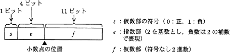
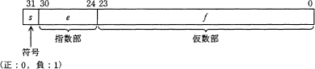

1年生 プログラム理論試験(第１回)
問１
10進数の演算式 7÷32 の結果を 2進数で表せ。
問２
16 進小数 2A.4Cを 「2n ＋ 2n-1 ＋ …」の形式で表わせ。
(基本情報技術者 平成22年春期 午前問1 改)
問３
図に示す16ビットの浮動小数点形式において，10進数 0.25 を正規化して表現せよ。
ここで，正規化は仮数部の最上位けたが1になるように指数部と仮数部を調節する操作とする。
(応用情報技術者 平成22年春期 午前問2 改)

問4
次の浮動小数点表示法がある。小数点は仮数部の左にあり，指数は64の"下駄(げた)履き表現"であって，
値は (-1)s×0.f×2e-64 である。
二つの16進数45BF0000と41300000を，この浮動小数点表示法で表現された値として加算した結果を求めよ。
(ソフトウェア開発技術者 平成20年春期 午前問2 改)

問５
１．
C言語におけるstatic修飾子を
・ローカル変数
・グローバル変数
・関数
に付けた場合、それぞれどのような効果が得られるか説明せよ。
２．
static修飾子を用いれば、オブジェクト指向でいう「カプセル化」はC言語でも実現可能である。
その理由をC++言語と対比して説明せよ。
問６
以下のようなソースコードがある。
Character.h
1: class Character 2: { 3: public: 4: Character() {} 5: ~Character() {} 6: 7: private: 8: int m_level; 9: int m_hitPoint; 10: };
Player.h
1: #include "Character.h" 2: 3: class Player : public Character 4: { 5: public: 6: Player() {} 7: ~Player() {} 8: 9: private: 10: int m_skillLevel; 11: };
Enemy.h
1: #include "Character.h" 2: 3: class Enemy : public Character 4: { 5: public: 6: Enemy() {} 7: ~Enemy() {} 8: 9: private: 10: int m_attackRate; 11: };
main.cpp
1: #include "Player.h" 2: #include "Enemy.h" 3: 4: int main() 5: { 6: Player player; 7: Enemy enemy; 8: 9: return 0; 10: }
１．
VisualStudioで作成したプロジェクトにこれらのファイルを登録しビルドすると、ビルドエラーが発生する。
エラーの種類とそのエラーの原因を述べよ。
２．
Character.hを修正し、ビルドエラーを回避せよ。
３．
上記２．の修正でエラーが回避できる理由を述べよ。